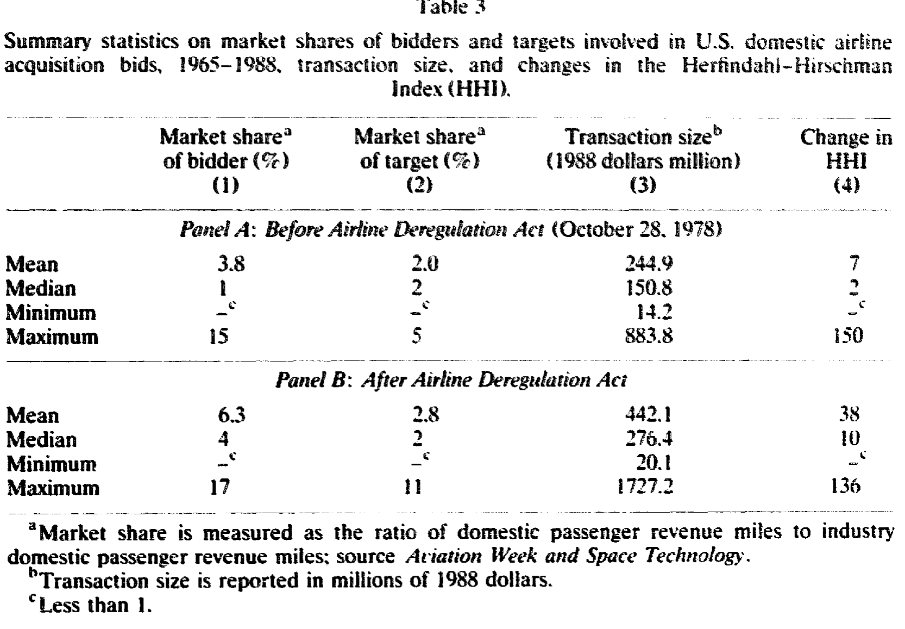
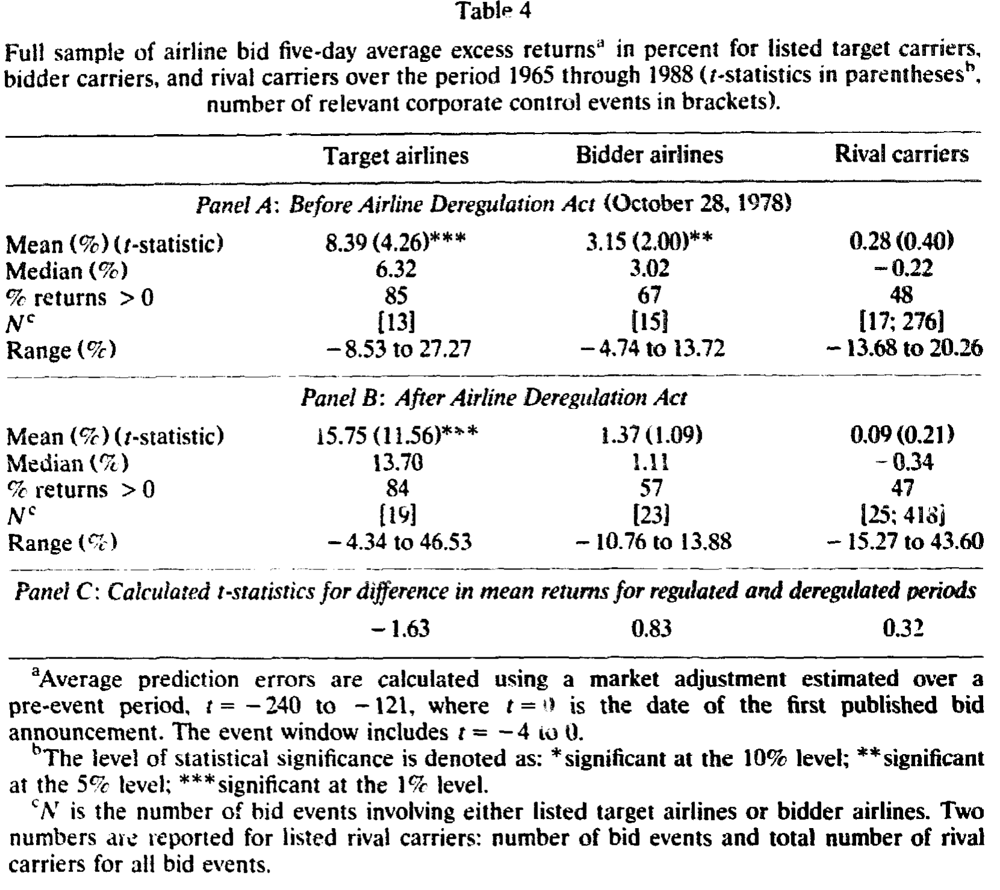
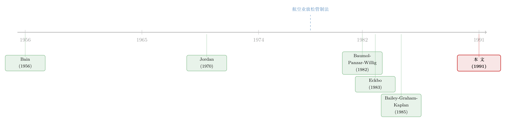

监管这把「保护伞」下面，藏着一座合谋的金矿
本文读的是 Slovin, Sushka & Hudson (1991, Journal of Financial Economics)：用 1965–1988 年 42 桩美国航空公司横向收购的股价反应，去测一个看似政治、实则可证伪的问题——航空业的「垄断利润」到底是在管制时期，还是在放松管制之后？结论很反直觉：在民航局 (CAB) 管制下，收购方、被收购方、连同旁观的同行，其超额收益都随并购带来的行业集中度上升而上升；而 1978 年放松管制之后，集中度再怎么变，都换不来一分钱的正向超额收益。换句话说，合谋的金矿藏在「监管」这把伞下，拆掉伞，矿也就没了。
1 一个被讲反了的故事
先讲一个 1980 年代华盛顿听证会上的常识。
那时候，批评放松管制的人——比如众议院航空小组委员会主席 Oberstar——会站出来说：1978 年的《航空业放松管制法》(Airline Deregulation Act of 1978) 把「以公共利益为名的政府管制」换成了「以私利为名的私人垄断」，航空公司从此可以随便抬票价、随便砍班次。Brenner (1988)、Spencer 和 Cassell (1983) 这些学者也持类似看法：放松管制催生了高度集中、形同垄断的航空业，于是有人开始呼吁「重新管制」。
听起来天经地义。集中度上去了，竞争没了，消费者吃亏，这是产业组织教科书的第一课。
但还有另一种声音，来自 Jordan (1970, 1972)。Jordan 的论断恰恰相反：在民航局管制的年代，CAB 本身就是一个卡特尔的组织者——它限制航线竞争、禁止新航空公司进入、批准甚至鼓励航空公司之间的反竞争协议与合并。Kahn (1988) 干脆把放松管制形容为把消费者「从全面卡特尔化的紧身衣里解放出来」。
于是张力出现了：同一个行业，两套截然相反的叙事。 一边说垄断是放松管制的产物，一边说垄断恰恰是管制的产物。谁对？
这正是这篇论文要解决的事。而它解决的方式，妙就妙在——它没有去打嘴仗，而是把这个问题交给了股票市场。
2 把「合谋」变成一个可证伪的命题
怎么用股价去测合谋？逻辑链其实很干净。
首先，假设金融市场是有效的。那么如果一桩横向收购提高了行业合谋的预期程度或概率——比如让幸存的航空公司能联手抬价、或者一起减少班次降低服务质量——那么参与并购的双方理应赚到更高的预期利润，股价会把这份未来的现金流提前贴现进去。
接着，一个自然的问题是：合谋的好处，不该只落在并购双方头上。如果两三家大公司合并后整个行业更容易「心照不宣」地涨价，那么旁观的竞争对手（rival carriers）也能搭便车——它们只要跟着减班、跟着涨价就行。所以，合谋假说有一个非常硬的、非常可检验的推论：
如果市场预期某桩并购会带来合谋收益，那么不只是收购方和被收购方，连没参与的同行，其股价反应都应该是「行业集中度上升幅度」的正函数。集中度变得越多，三方的超额收益越高。
这一步是整篇论文的「阿基米德支点」。因为它把一个政治化的、公说公有理的争论，变成了一个可以用回归系数的符号去裁决的实证命题。集中度上升 → 同行也涨 → 合谋；集中度上升 → 同行不涨甚至跌 → 没有合谋。
然后，论文还提供了对立假说的「另一只手」：可竞争市场理论 (contestable markets theory)。这套理论的核心来自 Baumol, Panzar 和 Willig (1982)（更早的思想可追溯到 Bain (1956) 和 Sylos-Labini (1962)）：只要进入和退出足够自由——飞机可以在航线间灵活调配、可以在二级市场租赁、维修设施可以临时安排——那么即便市场上只剩少数几家公司、即便集中度很高，潜在竞争者的威胁也足以把价格压到竞争水平。在这种世界里，行业结构（集中度）根本不影响价格和服务质量，于是：
如果航空市场是可竞争的，那么超额收益应当与集中度的变化无关——回归系数应该不显著、\(R^2\) 应该接近零。
两个假说，两套预言，正好打架。论文要做的，就是把数据摆到这两套预言面前，看谁被证伪。
3 识别策略：一把事件研究的尺子，外加一道横截面回归
论文的实证设计分两步走。
第一步，量出「超额收益」。 这是标准的事件研究 (event study)。作者从《华尔街日报》和《纽约时报》逐年、逐家上市航空公司地搜检收购公告，最终得到 1965–1988 年间 42 桩横向航空收购要约，全部涉及在纽约或美国证券交易所挂牌的国内州际航空公司。用 CRSP 日度收益数据，计算目标、收购方、同行三类组合的平均预测误差 (average prediction errors, APE，即超额收益)：先在事件前的 \(t=-240\) 到 \(t=-121\) 这段「干净窗口」里估出市场模型参数，再用它去预测事件窗口 \(t=-4\) 到 \(t=0\)（\(t=0\) 为首次公告日）的「正常」收益，实际收益减去正常收益就是 APE。检验统计量是 APE 除以其用事件前时间序列估出的标准差。
这里有个值得停下来的细节：为什么要看同行？ 因为只看并购双方，分不清「合谋」和「效率」——双方涨价，可能是要联手垄断，也可能是合并后真的更有效率了。但旁观的同行不一样：合谋会让同行搭便车获益（一起涨价），而纯效率提升只会让同行受损（被更高效的对手抢走需求）。所以同行的反应，是区分两种故事的「测谎仪」。这套「拿同行当显微镜」的思路，正是 Eckbo (1983) 在横向并购研究里立下的范式（关于这条路径上更晚近的争论，可参见《并购是为了把饼做大，还是把价抬高？——答案藏在「产品像不像」里》 与《把饼做大，还是把同行的饭碗端走？——一桩横向并购的「三方验尸」》）。
第二步，把超额收益回归到集中度变化上。 这才是真正分胜负的地方。因为把超额收益简单平均，会把「大并购」和「小并购」混为一谈——有些收购涉及的双方市场份额极小，对行业集中度几乎没有影响，它们会把平均值「稀释」掉。所以作者估计如下横截面回归：
其中集中度用 赫芬达尔-赫希曼指数 (Herfindahl-Hirschman Index, HHI) 的变化来衡量——HHI 是各航空公司市场份额（以国内客运收入英里 / domestic passenger revenue miles 计）平方之和，垄断时取最大值、公司越多越分散则越趋近于零。作者还用了第二个度量：一个定性变量，标记某桩放松管制后的并购是否会造就「被支配的枢纽」(dominated hub)——即某机场 66% 以上的航班起降被单一航空公司占据。
识别上的关键安排：因为合谋假说对收购方和目标方的预测是单向的（系数应为正），作者对这两类用单尾检验；而并购对同行可能是利好（合谋）也可能是利空（效率挤压），方向不定，所以对同行用双尾检验。样本则按 1978 年 10 月 28 日一刀切成「管制期」和「放松管制期」分别回归——这条时间线是这篇论文全部识别力的来源：它假设这一天前后，唯一发生系统性改变的就是「监管是否还在替航空公司维持合谋」。
4 数据：42 桩并购，与一条逐年记录的集中度曲线
样本的全貌值得看清楚。1965–1988 年间共 42 桩横向收购要约，其中 17 桩在管制期（1978 年 10 月 28 日之前）、25 桩在放松管制期。24 桩最终导致了控制权变更，其中 9 桩发生在放松管制之前。值得一提的是，整个样本里只有两桩是要约收购 (tender offer)，一前一后各一桩——这个比例低得反常，因为 Boebel 和 Harris (1988) 报告说要约收购占了所有产业并购控制权交易的约六分之一。航空业的并购，绝大多数走的是协议路线，这本身就是 CAB 时代「合并要先过监管这一关」的遗迹。
并购规模在两个时期差异明显。如表 3 所示，管制期收购方平均市场份额 3.8%、目标方 2.0%，对应的 HHI 平均变动只有 7；放松管制期收购方份额升到 6.3%、目标方 2.8%，交易规模平均 $342.1 百万（1988 年美元），HHI 平均变动跳到 38。换句话说，放松管制后的并购更大、对集中度的冲击也更猛。管制期对集中度影响最大的一桩，是收购方 15%、目标方 5%，HHI 变动 150；放松管制期最猛的一桩，是收购方 17%、目标方 4%，HHI 变动 136。两个时期都有充分的横截面变异，这正是第二步回归能跑起来的前提。

Table 3
5 主要结果：平均值什么都没说，回归却说了一切
先看「平均」这把粗尺子，结论是——什么也没看出来。
如表 4 所示，五日事件窗口里：管制期目标公司平均超额收益 8.39%（t = 4.26，1% 显著），收购方 3.15%（t = 2.00，5% 显著），但同行只有 0.28%，t = 0.40，完全不显著。放松管制期目标公司更高，15.75%（高度显著），收购方 1.39%（t = 1.09，不显著），同行 0.09%（t = 0.21，不显著）。两个时期的差异检验呢？目标方 t = -1.63、收购方 0.83、同行 0.32——没有一个能拒绝「两期相等」。

Table 4
注意同行那一栏：无论管制还是放松管制，旁观的航空公司都只赚到正常收益。如果只看平均数，你会得出结论：航空并购从未带来过合谋收益，两个时期都没有。
但这正是论文最精彩的转折——平均值掩盖了真相。 因为它把那些「对集中度毫无影响的小并购」和「真正改变行业格局的大并购」一锅烩了。于是作者祭出第二步的横截面回归，让超额收益去对齐 HHI 的变动幅度。反转就在这里出现：
管制期（表 5 Panel A），HHI 的系数对三类公司都是正的：目标方 \(\hat\beta = 0.1466\)（t = 2.58，5% 显著，\(R^2 = 0.38\)），收购方 \(\hat\beta = 0.0575\)（t = 1.54，10% 显著，\(R^2 = 0.15\)），同行也是正的（\(R^2\) 约 0.00 但符号为正）。也就是说，在 CAB 管制下，一桩并购越是抬高行业集中度，连带旁观同行的股价也涨得越多——这正是合谋假说那个最硬的推论。Jordan 说对了。
放松管制期（表 5 Panel B），画风骤变：目标方 \(\hat\beta = 0.0464\)（t = 0.46），收购方 \(\hat\beta = 0.0066\)（t = 0.20），统统不显著，\(R^2\) 低到 0.0125 和 0.0019。集中度再怎么涨，目标和收购方的超额收益都不再随之上升。更耐人寻味的是，同行的系数变成了显著为负：\(\hat\beta = -0.0201\)（t = -2.79，1% 显著）。
这个负号怎么解释？作者的读法很克制：它不支持合谋（合谋要求同行随集中度上升而获益），反倒与可竞争市场一致。负号意味着，对于那些大型并购，市场预期需求会从同行手里转移走——大概是因为合并后的公司效率更高。但既然收购方和目标方的系数是正却不显著，就说明并没有「财富从同行被转移给并购双方」这回事。结论只能是：市场预期大型并购带来的超额效率，会很快通过更低价格（或更高质量服务）被竞争掉。这恰恰是可竞争市场的指纹——潜在进入的威胁，让谁都赚不到超常利润。
于是，开头那个被讲反了的故事，被股价纠正了过来：垄断利润的金矿，埋在 CAB 管制这把保护伞下面；放松管制非但没有制造垄断，反而把那座金矿夷为了平地。
6 文献脉络
把这篇论文放回它的坐标系，能看清它站在两条线的交汇点上。
一条是产业组织的理论线。早期，Bain (1956) 和 Sylos-Labini (1962) 提出「潜在竞争者能约束在位者的市场势力」这一思想雏形；到了 Baumol, Panzar 和 Willig (1982)，这套思想被打磨成完整的可竞争市场理论，给「即便集中、也未必有垄断」提供了严谨的理论基础。这条线为本文提供了「另一只手」——没有它，集中度系数不显著就只能解释为「测量太差」，而有了它，不显著本身就成了一个有意义的结论。
另一条是航空管制的实证争论线。Jordan (1970, 1972) 主张 CAB 实为卡特尔组织者；Kahn (1988)、Bailey, Graham 和 Kaplan (1985) 记录了放松管制前后的制度变迁与枢纽-辐射网络的兴起；而 Brenner (1988)、Spencer 和 Cassell (1983) 则站在对立面，认为放松管制催生了垄断。本文用一个干净的「管制 vs. 放松管制」自然实验，给这场争论提供了来自资本市场的、可证伪的证据。
而在方法论上，本文是 Eckbo (1983) 的直系后裔——后者在横向并购研究中确立了「用同行收益区分合谋与效率」的范式，并发现并购虽给同行带来正收益，却没有证据表明集中度影响行业收益。本文把这套尺子专门对准航空业这个「制度断点」最清晰的行业，得到了比 Eckbo 更锐利的对比。

7 评论与延伸（Q&A + 研究方向）
(a) 几个可能的疑问
Q：平均收益里目标公司在两个时期都大涨（8.39% 和 15.75%），这难道不说明并购一直在创造垄断价值吗？
不能这么读。目标公司的溢价在几乎所有并购里都为正，那是控制权转移的常态（接管溢价），与是否合谋无关。判别合谋的关键不是「目标涨没涨」，而是「同行涨不涨」以及「涨幅是否随集中度上升」。论文恰恰指出，平均值会掩盖一切，真正的裁决来自横截面回归的系数符号。
Q：管制期同行的平均超额收益只有 0.28%（不显著），可回归里同行系数却是正的——这两者矛盾吗？
不矛盾，反而正是论文的精髓。平均值把大量「对集中度无影响的小并购」混了进来，把信号稀释成了零。一旦按 HHI 变动幅度排开，那些真正抬高集中度的大并购对应的同行收益就显现出来了。平均不显著 + 回归显著为正，两者结合才完整地讲出「合谋藏在大并购里」的故事。
Q：把 1978 年 10 月 28 日当成一刀切的断点，可不可信？毕竟放松管制是渐进的。
这是识别上最该担心的地方。法律确实规定了逐步降低进入壁垒，但作者的辩护是：实践中 CAB 在法案通过后立即大幅放宽了进入（Bailey, Graham, Kaplan 1985 有记录）。即便如此，断点附近的若干并购究竟归哪一期，仍带有判断成分，样本量本就不大（管制期回归 N 仅 13–15），结果对个别事件的归类可能敏感。
Q：放松管制期同行系数显著为负，会不会其实是「效率转移」即一种隐性的合谋的另一面？
作者明确排除了这种读法。如果是财富从同行转移给并购双方，那么收购方和目标方的系数应当显著为正——但它们正却不显著。所以更合理的解释是：市场预期大并购的效率优势会被竞争（潜在进入）迅速抹平，谁都留不住超常利润。负号指向需求转移与效率，而非合谋分赃。
Q：用 HHI 的「隐含变动」而非实际变动，会不会有问题？
HHI 变动是基于并购双方公告时点的市场份额算出来的「隐含」冲击，而非事后实际实现的集中度。好处是它与公告同期、不受后续退出/进入污染；隐患是若市场预期某桩并购大概率被 CAB 否决，则隐含 HHI 会高估真实冲击。不过在事件研究框架下，股价反应本就该对应「市场当时预期的」集中度变化，这一点反而与方法自洽。
Q：样本里几乎没有要约收购，会不会让航空业的结论难以外推到其他行业？
是一个真实的外部效度限制。航空并购高度依赖监管审批，协议收购占绝对多数（42 桩中仅 2 桩要约），这与一般产业（要约收购约占六分之一，Boebel & Harris 1988）很不同。所以本文的结论更应被理解为「关于受管制行业里管制如何塑造合谋」的证据，而非对所有横向并购的普适论断。
(b) 几个可能的研究问题与提案
1. 把「管制断点」搬到债券市场去验。 【经济故事】如果合谋在管制期抬高了航空公司的预期现金流并降低了经营风险，那么其公司债利差也应当在管制期对 HHI 变动敏感、放松管制后脱敏。股权反应捕捉的是「上行的合谋租金」，债券利差则能从「下行风险」一侧交叉验证同一个机制。 【可行性】中。需要 1965–1988 年航空公司债券的二级市场报价，早期数据稀疏是最大障碍；可考虑用评级变动或新发债利差替代。识别仍沿用本文的时间断点。
2. 用更细的航线-机场层面数据，把「合谋」落到价格上。 【经济故事】本文用股价间接推断合谋，但合谋最终应体现在票价和班次上。若能在并购公告后，比较「受影响航线」与「对照航线」的票价路径，就能把资本市场的预期与产品市场的实现对接起来。 【可行性】高（对放松管制后样本）。美国交通部 DB1B 票价数据库覆盖 1990 年代后；管制期数据则需手工搜集，可行性中等。可用双重差分 (difference-in-differences, DiD)，以非重叠航线为对照。
3. 「被支配的枢纽」作为进入壁垒的资产定价含义。 【经济故事】本文的定性变量（dominated hub）在回归里并不显著，但枢纽-辐射网络是否构成可持续的进入壁垒，至今仍有争议。若枢纽支配真能阻挡进入，那么主导某枢纽的航空公司应当享有持久的、可在横截面中定价的超额收益。 【可行性】中。需要长期的机场起降份额面板与个股收益，构造「枢纽支配度」因子并检验其定价。识别难点在于枢纽地位的内生性（强者恒强）。
4. 把同样的「同行测谎仪」用到外资进入的情境。 【经济故事】当外资航空公司或外资股东进入一个受保护的本国市场时，在位者的合谋租金会被侵蚀。借鉴本文逻辑，可看在位同行的股价是否随外资进入而下跌、跌幅是否随进入规模递增——这是把「合谋 vs. 竞争」的识别框架迁移到外资持有人议题上。 【可行性】中。需要跨国航空业的外资持股与开放时点数据；不同国家的开放断点可作为多重自然实验。
8 参考文献
Bailey, E.E., Graham, D.R., Kaplan, D.P. (1985). Deregulating the Airlines. MIT Press.
Bain, J.S. (1956). Barriers to New Competition. Harvard University Press.
Baumol, W.J., Panzar, J.C., Willig, R.D. (1982). Contestable Markets and the Theory of Industry Structure. Harcourt Brace Jovanovich.
Boebel, R.B., Harris, R.S. (1988). Acquisitions and corporate control.
Brenner, M.A. (1988). Airline deregulation: a case study in public policy failure.
Eckbo, B.E. (1983). Horizontal mergers, collusion, and stockholder wealth. Journal of Financial Economics 11(1), 241–273.
Jordan, W.A. (1970). Airline Regulation in America: Effects and Imperfections. Johns Hopkins Press.
Jordan, W.A. (1972). Producer protection, prior market structure and the effects of government regulation. Journal of Law and Economics 15(1), 151–176.
Kahn, A.E. (1988). The Economics of Regulation: Principles and Institutions. MIT Press.
Slovin, M.B., Sushka, M.E., Hudson, C.D. (1991). Deregulation, contestability, and airline acquisitions. Journal of Financial Economics 30(2), 231–251.
Spencer, B.J., Cassell, F.H. (1983). Deregulation of the airlines.